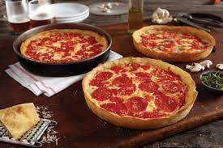

Chicago Style Stuffed Pizza

For this tasty Chicago-style stuffed pizza, a deep-dish pizza is stuffed with cheese, sausage, pepperoni, onions and green pepper. It's excellent!
Ingredients
- 2 teaspoons white sugar
- 1 cup warm water (110 degrees F/45 degrees C)
- 1 teaspoon active dry yeast
- 3 cups unbleached all-purpose flour, divided
- ½ cup warm water (110 degrees F/45 degrees C)
- ½ cup yellow cornmeal
- 1 ½ teaspoons salt
- 2 tablespoons olive oil
- ¼ pound spicy Italian sausage - browned, drained and crumbled
- 9 ounces shredded mozzarella cheese
- ¼ cup grated Parmesan cheese
- ⅓ cup diced pepperoni
- ¼ cup chopped onion
- ⅛ cup chopped green bell pepper
- 1 teaspoon dried oregano
- 3 cloves garlic, sliced
- ½ cup tomato sauce
Steps
- To Make Dough: In a small bowl, dissolve sugar in 1 cup warm water; in a separate small bowl combine the yeast, 1/2 cup flour, and 1/2 cup warm water. Mix together and let rest in bowl for about 20 minutes, until foamy.
- Meanwhile, in a medium bowl mix together remaining 2 1/2 cups flour with cornmeal and salt; remove half of this mixture from bowl and stir 1 cup sugar water into bowl. When well mixed, return second half of flour/cornmeal mixture to bowl and mix all together; then stir in yeast mixture. Knead dough on a lightly floured surface until smooth and elastic, about 8 to 12 minutes. Place dough in a lightly oiled bowl and cover with plastic wrap. Let rise until doubled in volume.
- Preheat oven to 450 degrees F (230 degrees C). To Make Stuffing: In a large bowl combine the sausage, mozzarella cheese, Parmesan cheese, pepperoni, onion, bell pepper, oregano and garlic. Mix well.
- Press half of the dough in the bottom and up the sides of a lightly greased deep dish pan. Bake crust in preheated oven for 4 minutes, then add the stuffing mixture to the bottom crust and cover with top crust; seal edges together with fingers, and trim excess. Slit top crust to allow steam to vent during baking; top with tomato sauce
- Bake on lower rack at 450 degrees F (230 degrees C) for 45 minutes, or until crust is golden brown. Remove from oven and allow to cool for 5 minutes, then cut and serve.